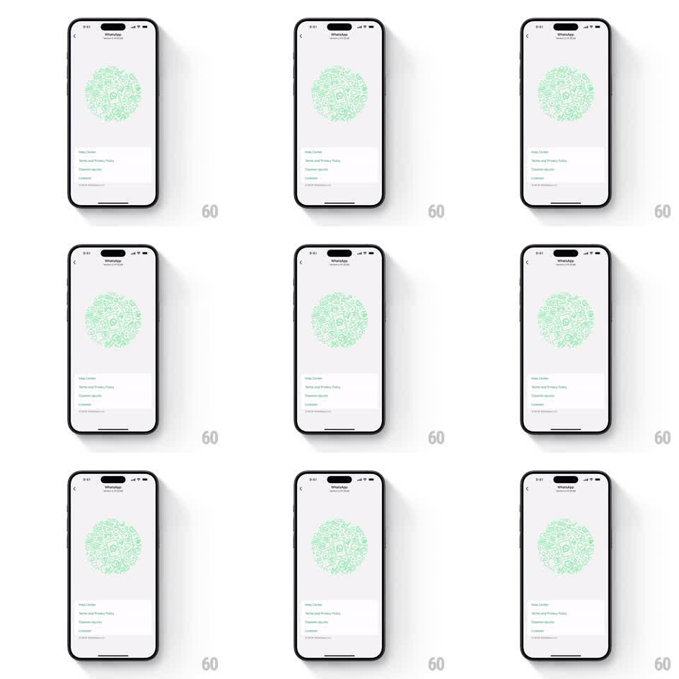

Media
Frame-by-frame

Rebuild this interaction 1:1: WhatsApp's hidden illustration easter egg - tap the big circular doodle collage in settings and the whole cluster springs, rotates, and reshuffles into a fresh arrangement of hand-drawn icons.

Rebuild this interaction 1:1: WhatsApp's hidden illustration easter egg - tap the big circular doodle collage in settings and the whole cluster springs, rotates, and reshuffles into a fresh arrangement of hand-drawn icons. ## Integration Integration: stack-agnostic spec - springs given as stiffness/damping, timed motions as duration + curve; map every value to your framework and animation library of choice. ## Scene WhatsApp info screen: large circular cluster of green hand-drawn doodle icons (phones, cameras, chats, stickers) above the settings links list. ## Motion spec Pattern: springy cluster morph, ~800ms. - Tap the illustration: the cluster squashes slightly (scale 0.94, 80ms) then rebounds. - During the rebound the cluster rotates ~30deg and every doodle swaps to a new glyph at a shuffled position - the change happens inside the motion so no individual swap is readable. - The cluster settles (spring ~350/16, one soft overshoot back to 0deg) as the new arrangement. - Each tap produces a different arrangement; the rotation direction alternates. - The links list below never moves. ## Calibration - The swap must hide inside the rotation - if users can track one doodle changing, the trick is exposed. - Keep total rotation small; this is a shuffle, not a spin. ## Reduced motion Crossfade between arrangements (250ms); no rotation. ## Don't miss - The cluster keeps its exact circular footprint through the morph - a shifting silhouette reads as a layout bug. - The spring rebound is the delight; a plain crossfade version should never ship as the default.